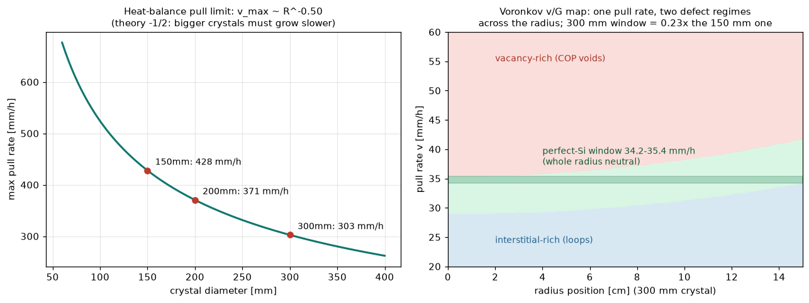

全モジュールはウェハから始まる——このページはそのウェハがどう生まれるか。CZ引き上げの熱収支限界（潜熱を結晶が運び切れる最大速度、v_max∝1/√Rを数値で厳密検証）と、Voronkovのv/G基準（空孔かインタースティシャルかは比率で決まる——「完全シリコン」が住む狭い引き上げ速度窓と、それが300mmでなぜ痩せるか）。
凝固潜熱は結晶を伝導して上がり、側面から放射で捨てるしかない：v_max=k_s(dT/dz)/(ρL)、放射冷却フィンの勾配は√(2εσT_m⁵/k_sR)——合わせて有名なv_max∝1/√R。数値掃引の指数は−0.50と厳密一致（テスト）。150/200/300mmで428/371/303mm/h（理想上限；実務はメルト側熱流と安定性でさらに低い、と正直に注記）。口径2倍＝スループット×4のウェハ面積を、成長速度↓と歩留り難化が食う——大口径化の経済がここにある。

残る点欠陥の種類は引き上げ速度vでも温度勾配Gでもなく比率v/Gで決まる：ξ_crit≈1.34e-3 cm²/(min·K)より上なら空孔リッチ（COPボイド）、下ならインタースティシャルリッチ（転位ループ）。Gはリムほど大きい（放射で冷える）ため、1つの引き上げ速度で中心と外周が別の欠陥モードになる——実インゴットの同心円状欠陥バンドの正体。全半径が中立帯に収まる「完全シリコン窓」は300mmで34.2–35.4mm/h、幅わずか1.2mm/h＝150mmの0.23倍。300mm完全シリコンが難しい理由を、1枚のv/Gマップで。
関連（実装済み）：リソグラフィ物語（ウェハのその後）・KABRA（SiCインゴットスライス）・薄化（ウェハの最期）。出所：sumco/cz_growth.py。